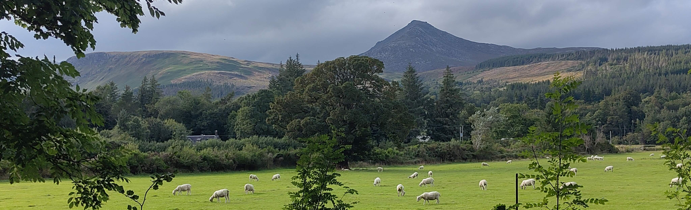

Verification and theorem proving research is notably strong in Scottish universities, with active groups and researchers in at least six departments. This new Scottish Theorem Proving and Verification Seminar (STPV) is intended to provide a common venue for communication and sharing of ideas by all these researchers. At least once a year, one of the departments hosts an informal seminar for the whole Scottish verification and theorem proving community. Represented fields include e.g. theorem proving, model checking and other forms of formal reasoning, verification and synthesis. This will also serve as a friendly venue for PhD students and RAs to discuss their work in progress and get feedback.
In this inaugural edition we have three invited speakers, presenting some of their STPV-related work and leading a panel discussion on the scope and future plans for the seminar series. The seminar series is intended as continuation and broadening of the previously existing STP seminars.
There is no registration fee but attendants need to register via the following form. Registration deadline is Monday, 21 September 2026.
Contact: clemens.kupke@strath.ac.uk.